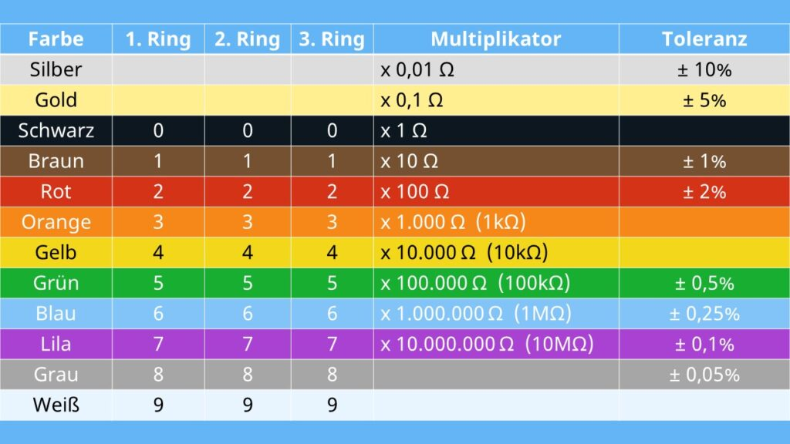

Der Widerstand
Ein Widerstand (oder Resistor) ist ein elektrisches Bauteil, das den Stromfluss in einem Stromkreis begrenzt. Durch seine Fähigkeit, den Stromfluss zu kontrollieren, verhindert er, dass zu hohe Ströme Geräte beschädigen oder Schaltkreise überlasten. Widerstände wandeln elektrische Energie in Wärme um, die abgeführt wird. Die Stärke des Widerstands wird in Ohm (Ω) gemessen.
Arten von Widerständen
Widerstände unterscheiden sich nach ihrem Aufbau und ihrer Funktion:
- Festwiderstände: haben einen festen Widerstandswert und werden am häufigsten verwendet.
- Potentiometer oder verstellbare Widerstände: Der Widerstandswert ist veränderbar, häufig in Lautstärkereglern verwendet.
- NTCs und PTCs: temperaturabhängige Widerstände, deren Widerstandswert sich mit der Temperatur ändert.
- LDRs: lichtempfindliche Widerstände, deren Widerstand sich je nach Lichteinfall verändert.
Farbcodes
Die Widerstandswerte sind oft mit Farbringen gekennzeichnet. Ein Standard-Widerstand hat vier bis sechs Farbringe, wobei die ersten zwei (oder drei) Ringe den Widerstandswert angeben, der nächste Ring den Multiplikator und der letzte Ring die Toleranz (Genauigkeit) des Widerstandes:
- Erste und zweite Farbe: Ziffernwerte (z.B., Rot = 2, Blau = 6)
- Dritte Farbe: Multiplikator (z.B., Orange =
10^3) - Vierte Farbe: Toleranz (z.B., Gold = ±5 %)
Zum Beispiel steht ein Widerstand mit den Farben Rot, Violett, Gelb und Gold für 27 * 10^4 Ω (also 270.000 Ω oder 270 kΩ) mit einer Toleranz von ±5 %.
Eine Tabelle der Farbcodes wäre folgende:

Funktionsweise
Ein Widerstand besteht aus einem Material mit hoher elektrischer Leitfähigkeit, das den Stromfluss hemmt. Die Spannung und der Strom stehen im Verhältnis zueinander, das durch das Ohmsche Gesetz beschrieben wird:
R = U / I
wobei R der Widerstand ist.
Berechnung
Zur Berechnung des Gesamtwiderstandes bei mehreren Widerständen im Stromkreis gibt es zwei Fälle:
- Serienschaltung: Die Widerstände werden addiert, also
R1 + R2 + R3 ..... + Rx. - Parallelschaltung: Die Kehrwerte der Widerstände werden addiert, also
1 / ( 1 / R1 + 1 / R2 + 1 / R3 + ... 1 / Rx ).
Widerstände sind entscheidende Bauteile in der Elektrotechnik, die in nahezu jedem elektronischen Gerät zu finden sind.